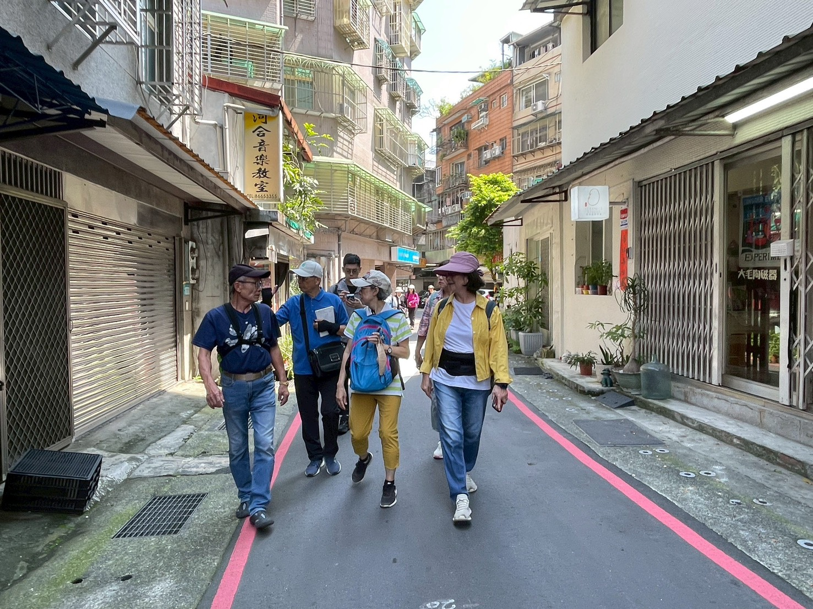
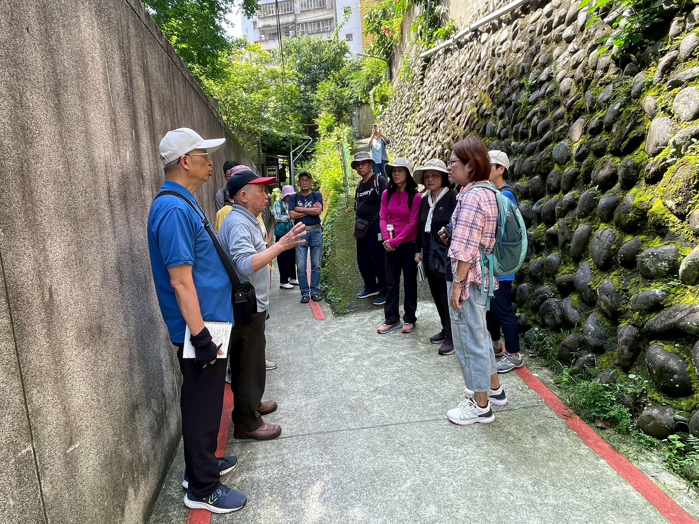
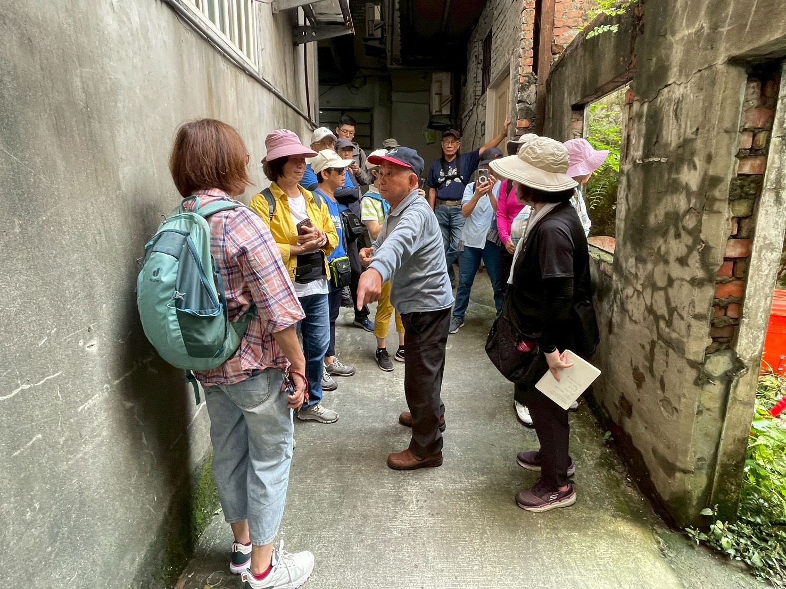
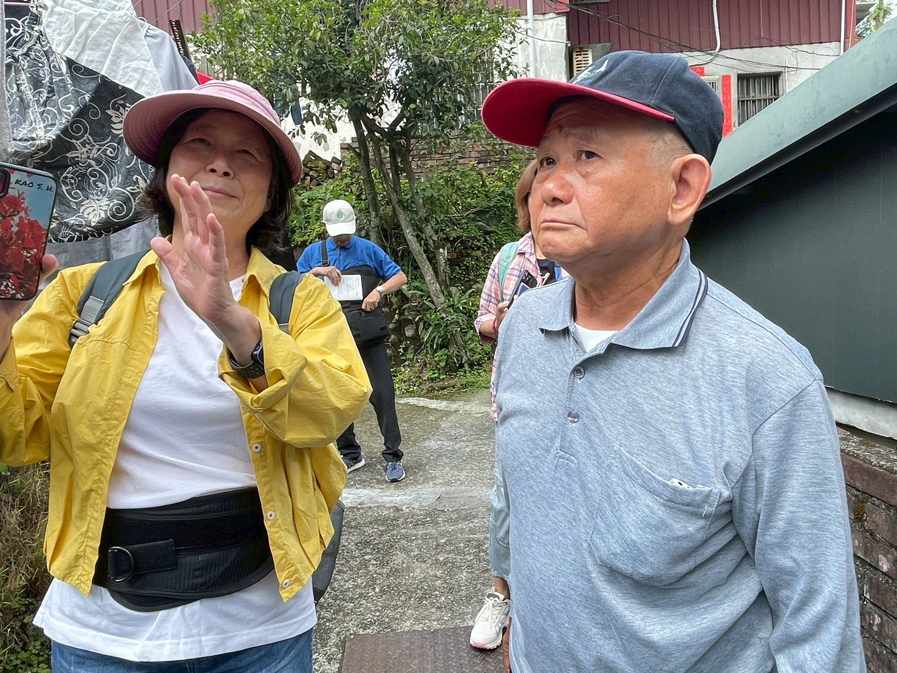

田野紀錄
把耳朵貼近地方
這一頁像走讀後的一次回望。淑美把煤礦、摩天嶺、新店溪與城市變遷寫成一段凝望，也提醒我們：風景仍在，記憶更需要被好好留下。
1150507訪談及田調記錄表-淑美心得

田調/訪查紀錄表
紀錄日期
115年05月07日 9時 至12時30分
紀錄者
王淑美
紀錄類別 （可複選）
■人物（對象名稱〆高金舜） □商店（類別） □老樹■老建築 ■自然景點 ■特色景觀 □史蹟 □其他（ ）
所在位置
地址
座標
出生年/存在年份
心得
【歷史影像隨想：碧潭的滑水黃金年代】
從老師分享舊日收集的檔案有感：民國 47 年 11 月是什麼日子？眼見萬頭鑽動往新店碧潭聚集；原來都為觀賞美國巴萊特滑水團 12 人團隊的水上表演而來~
遊艇以繩索牽繫著表演者，快速的在水面繞行。艇與人滑行過水面，激盪起層層的銀白水花~疊羅漢、向觀眾致敬，更有水上芭蕾等節目，讓看台上人山人海的觀眾們目不轉睛~為訓練有素的表演者們精湛的演出讚嘆不已~
從演出的影片中，遙想昔日水源之豐沛：寬闊的水面倒映山影疊翠，氣象萬千，難怪博得「小赤壁」美名~
【實地踏查：水圳源頭與地景的低語】
一直猶豫能否報名今日行程，不知能否承擔豔陽下的走走停停---但心裡又想聽老師講述河岸遺跡的歷史故事~ 經過昨日努力敲打不適的雙腿，請她務必放鬆，恢復柔軟，讓我有幸參與今日的課程。
在「青潭一」的公車站牌附近，倚靠北宜路的護欄往下看，只見被納莉颱風吞噬的四戶人家舊址，歷經無人管理，本是任其荒廢的空地，竟自成了生機勃勃的一片綠地。如果，能善加整治，讓其成為一處可資休憩的公園，既紀念水圳源頭，也不負眼前的明媚風光，豈不更好~
再往新烏路方向移動，駐足青潭公車總站上方遠眺，青潭溪與新店溪匯流處清晰可見。老師遙指：當年郭公錫瑠遠赴成都觀摩都江堰後，在新店溪設置竹蛇籠的可能位置；接著，下切至「斗門頭」遺跡處，揣想圳道的可能路線---因為，已經被建物、泥土、植被覆蓋的水圳，早已無跡可尋~只留以水圳工程為名的地名，讓人懷想~
沿著自行車道且看且走，赫然發現：北宜路上看似一、二層的房屋，自此抬眼望去，每棟房屋都順勢往下建構，路面以下 3~6 層不等，竟是無比熱鬧繽紛~
而我們正行走在曾經溪濶水深，水量豐沛的溪底；在歷經災變後，以消波塊堆疊搶救淘空的河床上，如今修築成連結新烏路到碧潭渡船頭的自行車道，邊坡上高聳的擋土牆，堤岸邊還可見散置的消波塊，似乎仍喃喃低語著那驚心動魄後的嗚咽~
【開天宮引水石腔：不屈不撓的歷史印記】
行至開天宮，終於可以瞻仰「引水石腔」~ 令人肅然起敬的渠道工程~
如今，石腔只留入口處一段供人憑弔，上游一端已被沖刷的土流淤塞。走進已經乾涸的渠道，但見天然的岩壁上是一道道鑿敲槌打的痕跡，見證秉持貫徹引水灌溉理想的堅韌毅力，更是不屈不撓的精神印記。
其間，不知是多少人的齊心合力，方能克服萬難，成就集灌溉、調節水量、防洪等造福鄉鄰的圳道。更別說水圳意外的便利多少家庭日常洗滌用水，成為孩童嬉鬧的遊戲場域等，是多少人難以忘懷的陳年記憶~
隨著水泥叢林的快速成長，稻田一片片消失，水圳的灌溉功能不再；水圳也在日新月異的建設中，支離破碎~不是不見蹤跡，就是惡臭熏天---清澈水流承載的歡樂滿足已是昨日黃花，水圳的流水聲成了典藏的記憶，獨留一縷微光，猶在想念裡迴盪~
同行光影
光影也替地方作證


